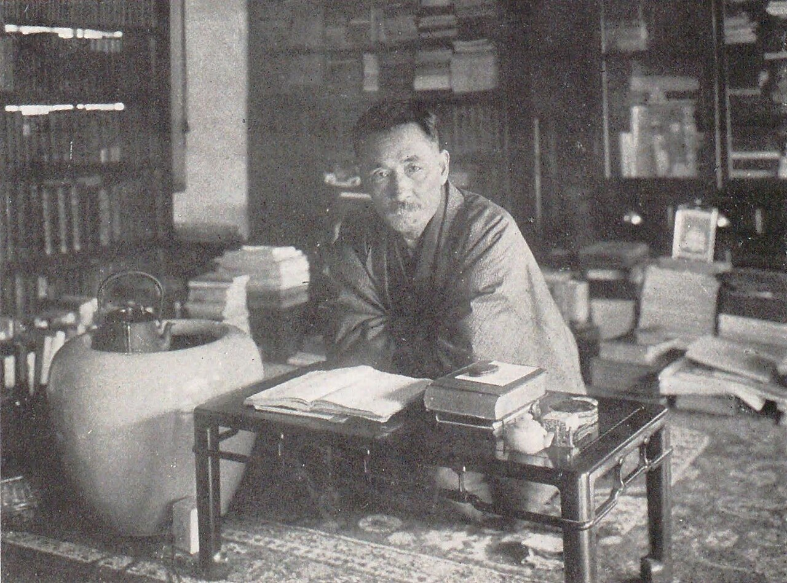

Thông tin chung

- Sinh ngày 9 tháng 2 năm 1867 tại Edo
- Thể loại: tiểu thuyết, truyện ngắn, thơ, lý luận văn học
- Thường được coi là nhà văn hiện đại đầu tiên của Nhật Bản
- Là một trong những chủ soái của Dư dụ phái (trường phái văn chương tâm lý cao sang)
- Đề tài chủ đạo:
- - Chủ nghĩa cá nhân
- - Sự cô đơn
- - Xung đột giữa các giá trị truyền thống và phương Tây
- Qua đời ngày 9 tháng 12 năm 1916 vì bị thủng dạ dày